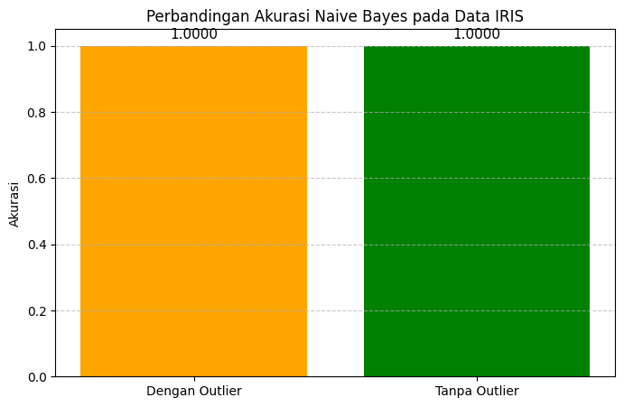

Naive Bayes#
Berikut langkah-langkah membandingkan akurasi Naive Bayes pada data IRIS dengan dan tanpa outlier:
1. Load Dataset Iris#
from sklearn.datasets import load_iris
import pandas as pd
iris = load_iris()
df = pd.DataFrame(iris.data, columns=iris.feature_names)
df['target'] = iris.target
print(df.shape)
(150, 5)
2. Deteksi Outlier#
Deteksi outlier menggunakan LOF:
from sklearn.neighbors import LocalOutlierFactor
lof = LocalOutlierFactor(n_neighbors=20)
outlier_pred = lof.fit_predict(df.iloc[:, :-1]) #Nilai outlier = -1 artinya outlier, 1 artinya bukan outlier
df['outlier'] = outlier_pred
print(df['outlier'].value_counts())
df[df['outlier'] == -1] #Menampilkan data outlier
outlier
1 144
-1 6
Name: count, dtype: int64
| sepal length (cm) | sepal width (cm) | petal length (cm) | petal width (cm) | target | outlier | |
|---|---|---|---|---|---|---|
| 15 | 5.7 | 4.4 | 1.5 | 0.4 | 0 | -1 |
| 41 | 4.5 | 2.3 | 1.3 | 0.3 | 0 | -1 |
| 98 | 5.1 | 2.5 | 3.0 | 1.1 | 1 | -1 |
| 117 | 7.7 | 3.8 | 6.7 | 2.2 | 2 | -1 |
| 118 | 7.7 | 2.6 | 6.9 | 2.3 | 2 | -1 |
| 131 | 7.9 | 3.8 | 6.4 | 2.0 | 2 | -1 |
3. Pisahkan Dataset#
Dengan outlier (original)
Tanpa outlier
df_with_outlier = df.drop(columns=['outlier'])
df_no_outlier = df[df['outlier'] == 1].drop(columns=['outlier'])
print("Data dengan outlier:", df_with_outlier.shape)
print("Data tanpa outlier :", df_no_outlier.shape)
Data dengan outlier: (150, 5)
Data tanpa outlier : (144, 5)
4. Model Naive Baiyes#
Menggunakan GaussianNB dari scikit-learn:
from sklearn.naive_bayes import GaussianNB
from sklearn.model_selection import train_test_split
from sklearn.metrics import accuracy_score
Model dengan outlier:
X1 = df_with_outlier.drop(columns=['target'])
y1 = df_with_outlier['target']
X1_train, X1_test, y1_train, y1_test = train_test_split(X1, y1, test_size=0.2, random_state=42) #Persiapan data
model1 = GaussianNB() #Inisialisasi model
model1.fit(X1_train, y1_train) #Latih Model
y1_pred = model1.predict(X1_test) #Prediksi
#Evaluasi
acc_with_outlier = accuracy_score(y1_test, y1_pred)
print("Akurasi dengan outlier:", acc_with_outlier)
Akurasi dengan outlier: 1.0
Model tanpa outlier:
X2 = df_no_outlier.drop(columns=['target'])
y2 = df_no_outlier['target']
X2_train, X2_test, y2_train, y2_test = train_test_split(X2, y2, test_size=0.2, random_state=42)
model2 = GaussianNB()
model2.fit(X2_train, y2_train)
y2_pred = model2.predict(X2_test)
acc_no_outlier = accuracy_score(y2_test, y2_pred)
print("Akurasi tanpa outlier:", acc_no_outlier)
Akurasi tanpa outlier: 1.0
Berikut adalah visualisasi perbandingan akurasi Naive Bayes pada data IRIS dengan dan tanpa outlier menggunakan matplotlib.
import matplotlib.pyplot as plt
# Misalnya hasil akurasi dari sebelumnya
akurasi_dengan_outlier = acc_with_outlier # contoh: 1.0
akurasi_tanpa_outlier = acc_no_outlier # contoh: 0.9583
# Data untuk visualisasi
labels = ['Dengan Outlier', 'Tanpa Outlier']
akurasi = [akurasi_dengan_outlier, akurasi_tanpa_outlier]
warna = ['orange', 'green']
# Plot
plt.figure(figsize=(8,5))
bars = plt.bar(labels, akurasi, color=warna)
plt.ylim(0, 1.05)
plt.ylabel('Akurasi')
plt.title('Perbandingan Akurasi Naive Bayes pada Data IRIS')
plt.grid(axis='y', linestyle='--', alpha=0.7)
# Tampilkan nilai akurasi di atas bar
for bar in bars:
yval = bar.get_height()
plt.text(bar.get_x() + bar.get_width()/2, yval + 0.02, f'{yval:.4f}', ha='center', fontsize=11)
plt.show()

5. Visualisasi Outlier#
Berikut adalah grafik visualisasi outlier dari dataset IRIS menggunakan LOF. Visualisasi data dalam dua dimensi menggunakan PCA agar lebih mudah lihat, lalu membedakan warnanya.
import matplotlib.pyplot as plt
from sklearn.decomposition import PCA
# Ambil hanya fitur (tanpa target dan outlier label)
features = df.drop(columns=['target', 'outlier'])
# Reduksi dimensi ke 2D dengan PCA
pca = PCA(n_components=2)
X_pca = pca.fit_transform(features)
# Plot hasil PCA dengan warna berdasarkan outlier
plt.figure(figsize=(8, 6))
# Pisahkan titik normal dan outlier
normal_points = df[df['outlier'] == 1]
outlier_points = df[df['outlier'] == -1]
# Plot titik normal (warna biru)
plt.scatter(X_pca[normal_points.index, 0], X_pca[normal_points.index, 1], c='blue', edgecolor='k', s=100, label='Normal')
# Plot titik outlier (warna merah)
plt.scatter(X_pca[outlier_points.index, 0], X_pca[outlier_points.index, 1], c='red', edgecolor='k', s=100, label='Outlier')
# Menambahkan label untuk outlier saja
for i, label in enumerate(df['outlier']):
if label == -1: # Hanya menambahkan label pada outlier
plt.text(X_pca[i, 0], X_pca[i, 1], str(i), fontsize=9, ha='right', color='black')
# Tampilkan semua titik outlier dalam plot
outlier_indices = df[df['outlier'] == -1].index
print(f'Outlier indices: {outlier_indices.tolist()}')
plt.title('Visualisasi Outlier dengan Local Outlier Factor')
plt.xlabel('PCA Komponen 1')
plt.ylabel('PCA Komponen 2')
plt.grid(True)
# Menambahkan legenda
plt.legend(loc='lower right')
# Tampilkan plot
plt.show()
Outlier indices: [15, 41, 98, 117, 118, 131]